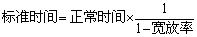

1 . 教学安排
2 . 作业测定的概念及作用
3 . 作业测定的应用
4 . 作业测定的方法及特点
5 . 工时消耗分类及标准时间的构成
 工时消耗分类
工时消耗分类
传统工时的计算
标准时间
工时定额
6 . 思考与练习题
 返回课程学习首页
返回课程学习首页
标准时间
标准时间的含义是：“在适宜的操作条件下用最合适的操作方法，以普通熟练工人的正常速度完成标准作业所需要的劳动时间。”
标准时间的特性：
(1)客观性。对应于某一标准化了的作业操作，标准时间是一个客观存在的量值。
(2)可测性。只要将作业标准化了，就可以用科学的方法对操作进行测定。
(3)适应性。因为标准时间是以普通熟练工人以正常速度能完成某项作业的劳动标准时间，所以易于被大多数人所接受。
标准时间是由最初用秒表测得的时间，经评比率修正为正常时间，加以宽放时间而得到的。
(一)正常时间
正常时间是操作者以其速度稳定工作且无停顿或休息所需的时间。因正常时间中不含任何的停顿或休息，所以在制定标准时间之前，应找出操作时所需的停顿或休息，加入正常时间，才能使操作者维持稳定的正常操作。将进一步修正的时间称为宽放时间。
(二)宽放时间
宽放时间是用于补偿个人需要、不可避免地延迟以及由于疲劳而引起的效能下降。在正常时间上增加多少合适的宽放时间，是工时研究中争议最大的一个方面，因此尽可能精确地确定公允的宽放时间是很重要的。
宽放时间是指在生产过程中进行非纯作业所消耗的附加时间，以及补偿某些影响作业的时间。它是标准时间的组成部分之一，而非指所消耗的时间。宽放时间一般分为以下五种：私事宽放、疲劳宽放、程序宽放、特别宽放及政策宽放。
至今国内外尚无统一的分类标准。需要指出的是：企业已规定l0min或15min的工间休息时间，应把这些福利作为缩短工作日的时间，不应计入宽放时间。
(三)标准时间
标准时间常用的表达式为： 标准时间=正常时间+宽放时间
正常时间 = 观测时间×评定系数
，
，
标准时间的构成如图8-2所示。
图8-2 标准时间的构成
标准时间的侧重点是，通过方法研究和作业测定求得某一标准作业所需时间的一个唯一量值。测定标准时间的主要方法有：时间分析法、连续观测法、瞬时观测法、预定时间标准法、标准资料法等。标准时间主要用于确定作业或产品制造的工作量，编制生产，成本计划，制定工作标准，改进工作。